📁 Les 26 Enquêtes d'Impact (+45 000 Mots)
Enquête 01 : Le Grand Verrou Financier — La mécanique secrète des prêts hypothécaires extérieurs
Pendant que les jeunes ménages résidents se voient opposer des refus systématiques de prêt immobilier au nom du strict respect du taux d'endettement de 35 %, les holdings familiales et SCI continentales lèvent des millions d'euros par nantissement d'actifs hors-sol. Enquête exclusive sur l'asymétrie bancaire qui étrangle la jeunesse insulaire et sanctuarise la spéculation.

Enquête 02 : Le Mythe des Subventions — Anatomie de la captation fiscale par le Trésor Public
Accusée depuis des décennies de vivre d'assistanat budgétaire et de générosité nationale, la Corse subit en réalité une ponction fiscale directe sur les richesses qu'elle produit. Radiographie des flux fiscaux démontrant que les transferts de l'État ne sont que la restitution très partielle des taxes collectées sur l'île.

Enquête 03 : Étude Comparative — La Corse face aux régimes fonciers d'Outre-mer et d'Europe
À chaque tentative de régulation foncière en Corse, le gouvernement central oppose l'inconstitutionnalité du statut de résident et le principe de libre circulation. Pourtant, de Jersey à la Polynésie française, des mécanismes juridiques de protection du sol insulaire s'appliquent en toute légalité. Démonstration comparative.

Enquête 04 : La Marchandisation de l'Eau — Quand le château d'eau de la Méditerranée subit la pénurie
Qualifiée historiquement de château d'eau de la Méditerranée en raison de ses sommets enneigés et de ses fleuves abondants, la Corse fait face chaque été à des arrêtés préfectoraux de restriction d'eau potable. Enquête sur la gestion opaque de l'eau, les réseaux défaillants et la captation commerciale de la ressource.
Enquête 05 : L'Empire des SCI Non-Résidentes — La mainmise opaque sur le littoral corse
Derrière les volets clos des villas qui jalonnent le littoral insulaire se cache une architecture de sociétés civiles immobilières (SCI) d'une opacité calculée. Grâce à l'exploitation des Open Data du Registre des Bénéficiaires Effectifs (RBE), nous révélons l'ampleur du transfert de propriété foncière.

Enquête 06 : Le Pillage des Quotas de Pêche — Pourquoi nos marins-pêcheurs sont dépossédés de leur mer
Alors que la Corse possède plus de 1 000 kilomètres de côtes et une tradition de pêche artisanale séculaire, ses prud'homies et marins-pêcheurs subissent une spoliation administrative systématique des droits de pêche. Enquête sur la monopolisation des quotas de thon rouge et d'espadon par les thoniers-senneurs sétois et méditerranéens continentaux.
Enquête 07 : Le Cadastre Minier Secret & le Plan IRM 2024 — Les richesses enfouies du sous-sol corse
Présentée comme un territoire pauvre en ressources géologiques, la Corse abrite dans son socle schisteux et granitique d'anciens gisements miniers riches en métaux critiques (antimoine, cuivre, amiante, terres rares). Enquête sur les prospections discrètes et les concessions d'État délivrées au mépris du droit des communes.
Enquête 08 : Le Pillage de la Forêt Corse & l'Exportation du Bois Brut
Abritant des forêts mythiques de pin laricio, de chêne vert et de châtaignier (Vizzavona, Marmano, Bavella, Tartagine), la Corse voit sa ressource forestière pillée. Des milliers de mètres cubes de bois de haute valeur sont coupés et exportés bruts vers le continent et l'Italie sans aucune transformation industrielle sur l'île.
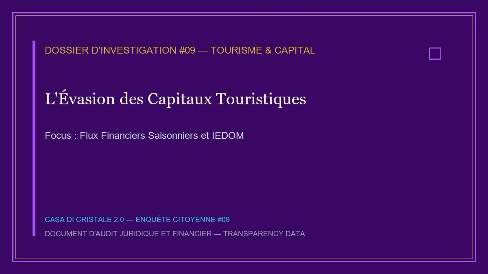
Enquête 09 : L'Évasion des Capitaux de la Saison Touristique — Le vol des valeurs ajoutées
Présenté comme le moteur de l'économie corse, le tourisme produit chaque été un chiffre d'affaires colossal se comptant en milliards d'euros. Cependant, une analyse médico-légale des flux monétaires démontre que plus de 65 % de cette valeur ajoutée quitte l'île dès la fin de la saison.
Enquête 10 : La Tutelle de la Haute Fonction Publique & le Gel des Compétences
Terre de sur-administration d'État et de sous-administration locale, la Corse subit la rotation continuelle de hauts fonctionnaires parisiens en quête d'avancement de carrière. Enquête sur le blocage des dossiers d'aménagement et le refus de former des cadres territoriaux insulaires souverains.
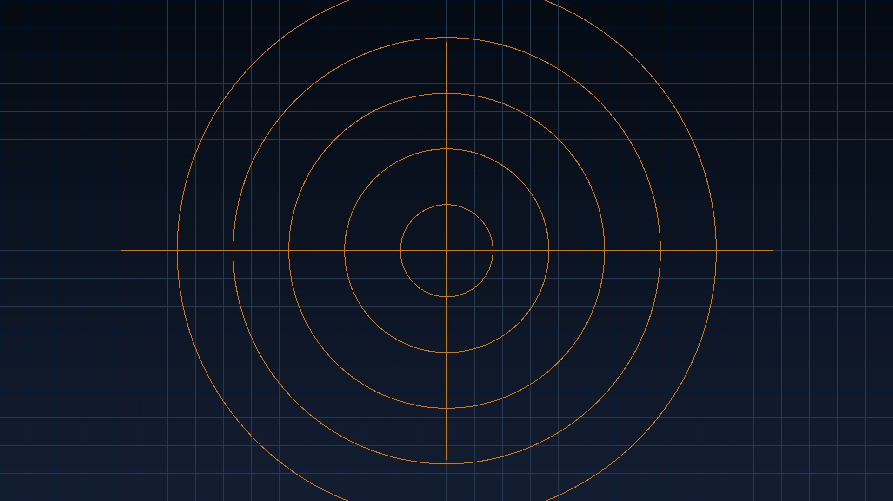
Enquête 11 : L'Emprise & les Servitudes Militaires — Le cadastre occulté du domaine de la Défense
Alors que la Corse souffre d'une pénurie aiguë de foncier pour le logement social et les infrastructures publiques, l'État conserve sous la main-mise de la Défense des domaines côtiers d'une valeur patrimoniale inestimable. Enquête sur les emprises de la Base Aérienne 126 de Solenzara, du 2e REP à Calvi et de la baie d'Aspretto à Ajaccio.
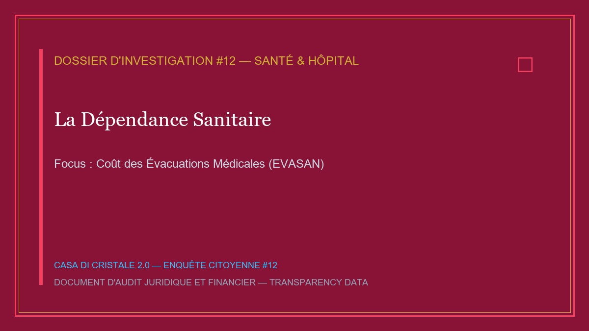
Enquête 12 : La Dépendance Sanitaire & le Coût du Sous-Équipement Hospitalier
Seul territoire métropolitain dépourvu de Centre Hospitalier Universitaire (CHU) de plein exercice, la Corse subit un sous-équipement sanitaire chronique. Enquête sur le coût humain et financier des 25 000 évacuations sanitaires (EVASAN) annuelles vers Marseille et Nice, financées au prix fort par l'assurance maladie insulaire.

Enquête 13 : Le Sous-Investissement Éducatif & l'Université de Corse
Fondée en 1765 par Pasquale Paoli et rouverte en 1981 grâce à la lutte populaire insulaire, l'Université de Corse à Corte est le cœur battant de la jeunesse et du savoir. Pourtant, elle souffre d'un sous-investissement récurrent du Ministère de l'Enseignement Supérieur.
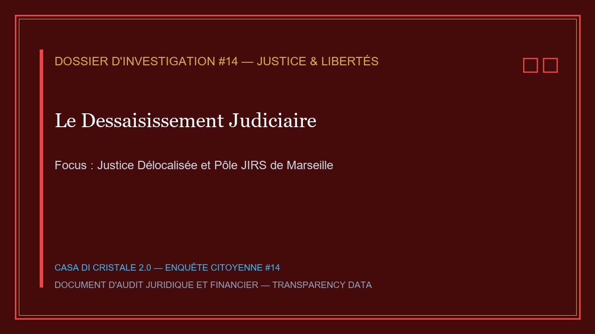
Enquête 14 : Le Dessaisissement Judiciaire & la Justice Délocalisée
En matière judiciaire et pénale, la Corse subit un régime de dérogation permanente. Sous le prétexte de lutter contre la criminalité organisée, la quasi-totalité des dossiers d'instruction complexes sont dépouillés des tribunaux de Bastia et Ajaccio pour être transférés à la JIRS de Marseille.
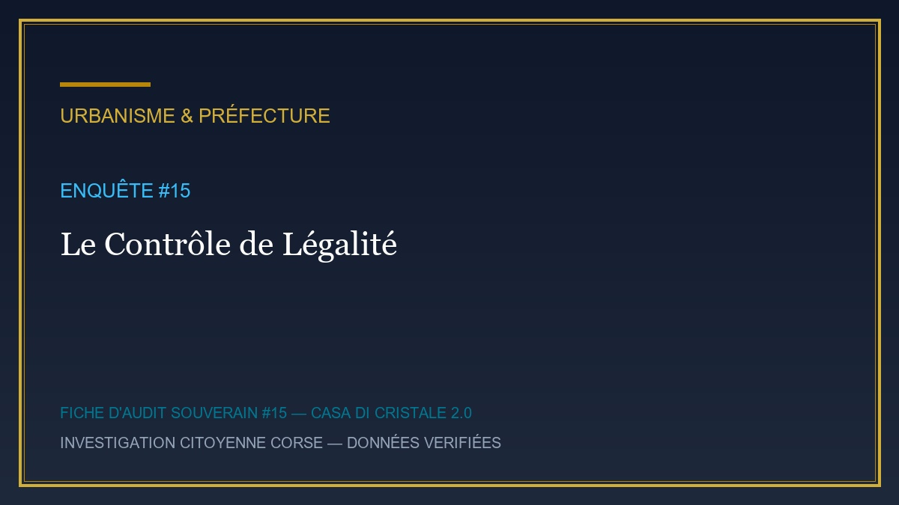
Enquête 15 : Le Contrôle de Légalité & la Censure des Délibérations Locales
Garants théoriques du contrôle de légalité des actes des collectivités, les services préfectoraux de Corse appliquent une justice administrative à deux vitesses. Enquête sur la censure systématique des arrêtés de maires de petits villages et la tolérance accordée aux grands permis de construire douteux du littoral.
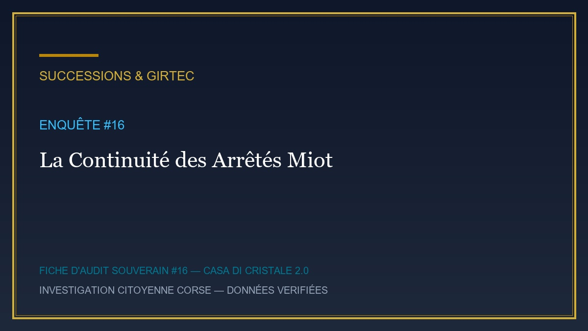
Enquête 16 : La Continuité Cinquantenaire des Arrêtés Miot & l'Indivision Foncière
Instaurés en 1798 par le comte André-François Miot de Melito pour adapter le droit de succession aux réalités de la propriété familiale corse, les arrêtés Miot ont été progressivement démantelés par le Législateur. Enquête sur le piège de l'indivision et le rôle clé du GIRTEC.
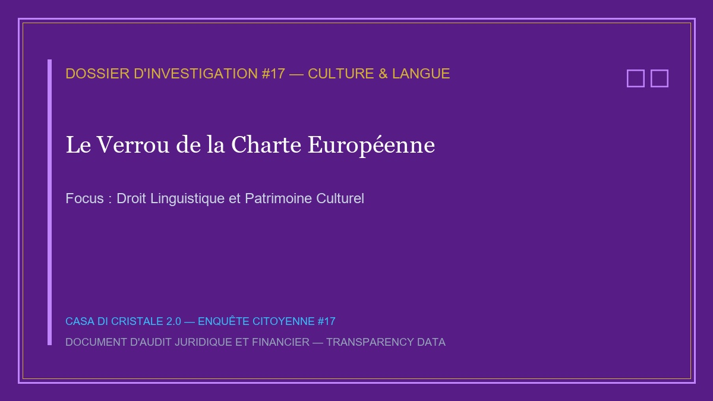
Enquête 17 : Le Verrou de la Charte Européenne & le Droit à la Langue Corse
Langue maternelle d'un peuple et véhicule de son histoire et de son patrimoine (la culture orale, les paghjelle, la toponymie), le corse subit une érosion linguistique accélérée. Enquête sur le refus de l'État d'accorder un statut de co-officialité et d'instaurer l'enseignement bilingue immersif obligatoire.
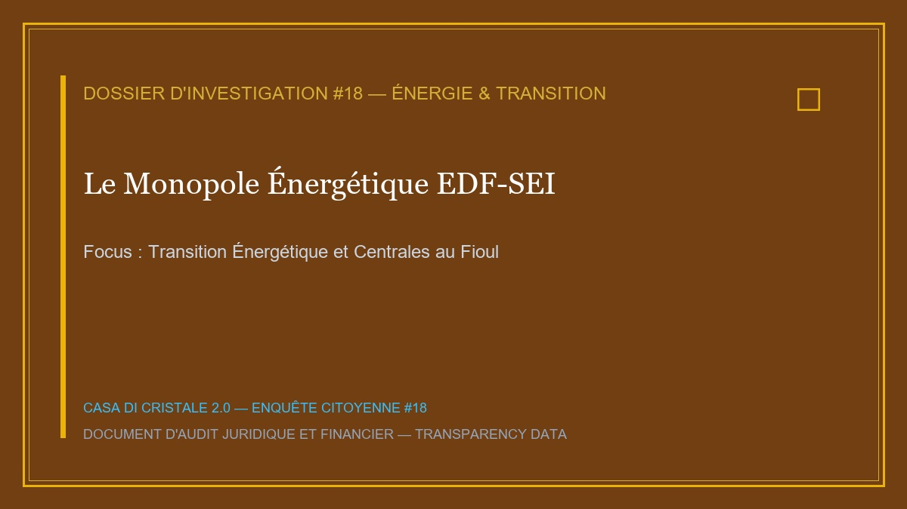
Enquête 18 : Le Monopole Énergétique EDF-SEI & la Transition Bloquée
Non connectée au réseau électrique continental européen et classée comme Zone Non Interconnectée (ZNI), la Corse dépend à plus de 60 % de la combustion de fioul lourd pour sa production d'électricité. Enquête sur le monopole d'EDF-SEI et la rentabilité du système de péréquation nationale.
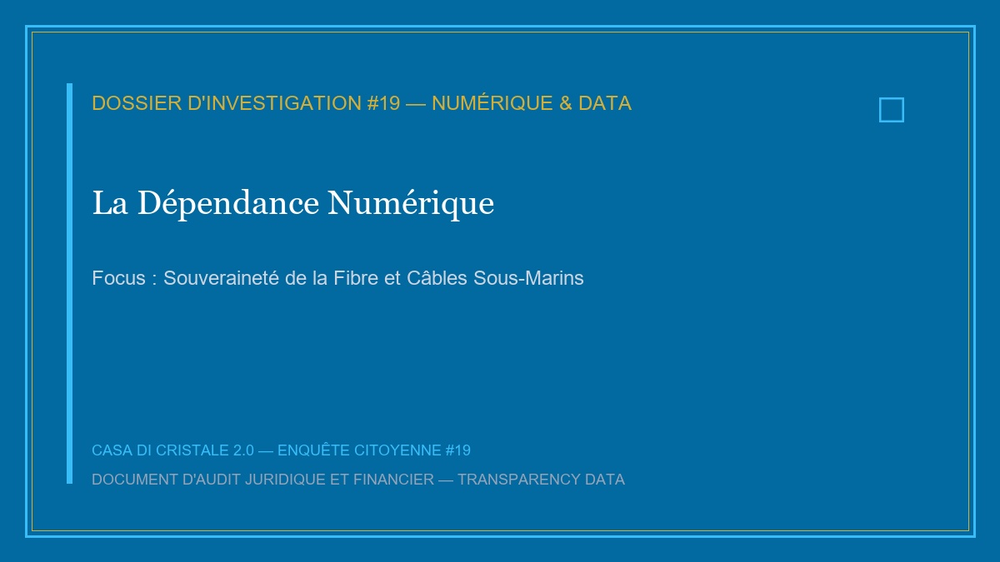
Enquête 19 : La Dépendance Numérique & les Atteintes à la Souveraineté des Données
Totalement dépendante de trois câbles de fibre optique sous-marins reliant l'île au continent, la Corse subit une fragilité numérique stratégique. Enquête sur le transfert des données administratives et cadastrales des résidents corses vers des datacenters continentaux et américains.
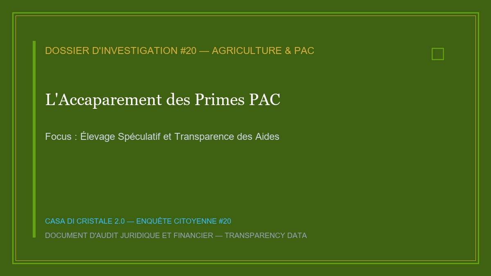
Enquête 20 : L'Accaparement des Primes PAC & l'Élevage Spéculatif
Destinées à soutenir les agriculteurs et à maintenir le pastoralisme traditionnel, les primes de la Politique Agricole Commune (PAC) font l'objet en Corse de détouremens et d'accaparements spéculatifs. Enquête sur les « chasseurs de primes » et le déclassement de la véritable agriculture insulaire.
Enquête 21 : Le Scandale des Déchets & le Coût de l'Enfouissement — L'impasse environnementale insulaire
Face au saturation des rares sites d'enfouissement de l'île (Tallone, Viggianello, Prunelli-di-Fiumorbo), la Corse subit un scandale environnemental et financier de première grandeur. Enquête sur l'échec du tri sélectif à la source et le coût exorbitant de l'exportation des déchets ménagers par cargos maritimes.
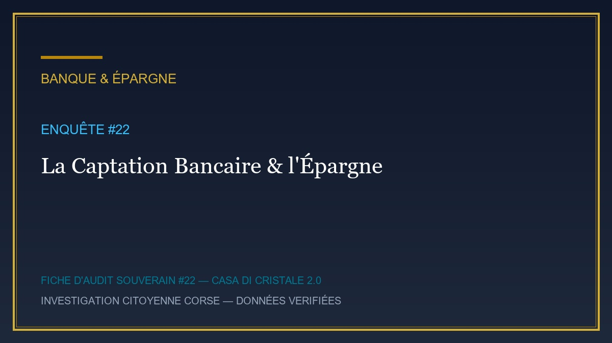
Enquête 22 : La Captation Bancaire & l'Évasion des Dépôts d'Épargne
Considérée par les directions des grands groupes bancaires français comme un bassin de collecte d'épargne liquide particulièrement rentable, la Corse subit un sous-investissement bancaire local. Enquête sur le siphonnage des livrets et comptes d'épargne vers les marchés financiers internationaux.
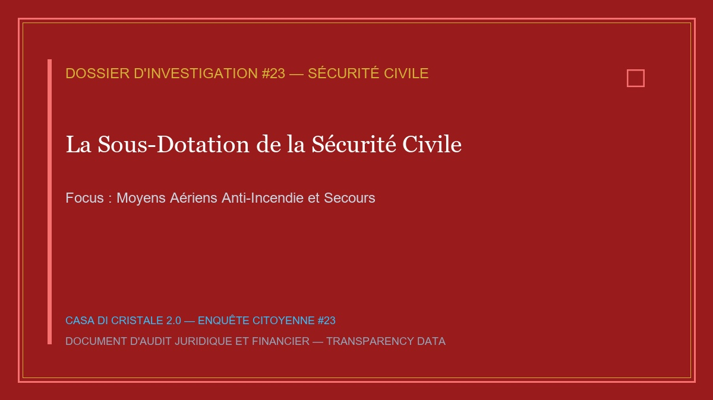
Enquête 23 : La Sous-Dotation de la Sécurité Civile & les Risques Majeurs
Territoire montagneux soumis à des épisodes de sécheresse estivale extrêmes et à des tempêtes hivernales violentes, la Corse fait face à des risques naturels majeurs (incendies de forêt, inondations, avalanches). Enquête sur le sous-dimensionnement des moyens de secours terrestres et aériens.

Enquête 24 : Le Radar d'Urbanisme & les Permis Tacites en Mairie
Pour éviter les recours des associations environnementales et la contestation des riverains, une part croissante des projets immobiliers spéculatifs sur le littoral corse naissent dans l'ombre du mécanisme du permis tacite. Enquête sur l'exploitation des failles du Code de l'Urbanisme.
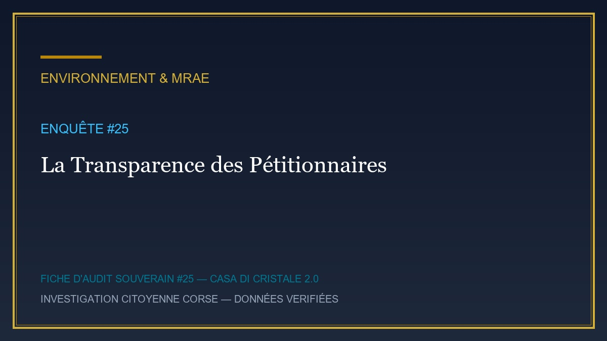
Enquête 25 : La Transparence des Pétitionnaires & l'Étude d'Impact Environnemental
Pour franchir l'obstacle des études d'impact environnemental obligatoires devant la MRAe (Mission Régionale d'Autorité Environnementale), certains promoteurs utilisent la technique du « saucillonnage » des projets. Enquête sur le décryptage des véritables pétitionnaires.
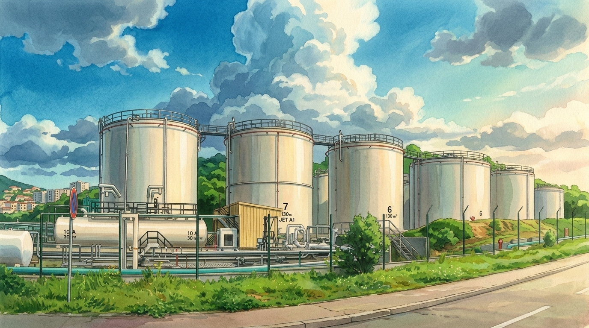
Enquête 26 : La Spéculation sur le Bâti Agricole & les Bergeries de Prestige
Éléments emblématiques du patrimoine pastoral corse, les bergeries et cabanes de pierre (i pagliaghji) situées dans les espaces remarquables du littoral et de la montagne font l'objet d'un détournement spéculatif à grande échelle. Enquête sur le contournement de la Loi Littoral.